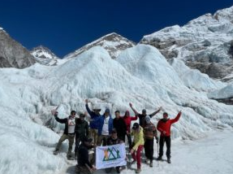
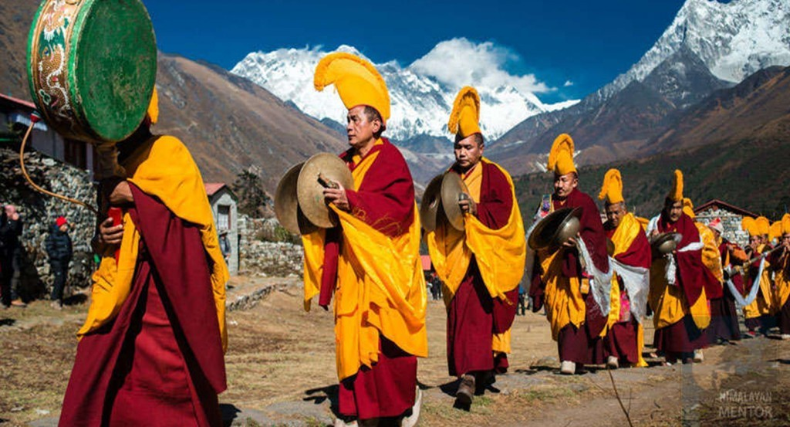

"Everest Base Camp: A Journey Through the Heart of the Himalayas"
Mount Everest Base Camp is one of the most iconic trekking destinations in the world, offering breathtaking views of the Himalayas and a chance to experience the legendary Sherpa culture. Located at an altitude of 5,364 meters (17,598 feet) in Nepal, the base camp serves as the starting point for climbers attempting to summit the world's highest peak. The journey to Everest Base Camp takes trekkers through Sagarmatha National Park, passing through picturesque villages like Namche Bazaar, Tengboche, and Dingboche. Along the way, travelers encounter stunning landscapes, ancient monasteries, and the warm hospitality of the Sherpa people.
Everest Base camp
 The Everest Base Camp trek typically takes 12–14 days, starting from Lukla, where trekkers fly into one of the world's most thrilling airports. The route follows the Dudh Koshi River, crossing suspension bridges and ascending through rugged terrain. Acclimatization days in Namche Bazaar and Dingboche help trekkers adjust to the high altitude, reducing the risk of altitude sickness. The final stretch to base camp leads through Gorakshep, the last settlement before reaching the glacier-covered camp. Many trekkers also hike to Kala Patthar (5,545 meters/18,192 feet) for a spectacular sunrise view of Everest.
The Everest Base Camp trek typically takes 12–14 days, starting from Lukla, where trekkers fly into one of the world's most thrilling airports. The route follows the Dudh Koshi River, crossing suspension bridges and ascending through rugged terrain. Acclimatization days in Namche Bazaar and Dingboche help trekkers adjust to the high altitude, reducing the risk of altitude sickness. The final stretch to base camp leads through Gorakshep, the last settlement before reaching the glacier-covered camp. Many trekkers also hike to Kala Patthar (5,545 meters/18,192 feet) for a spectacular sunrise view of Everest.
Everest trek
The Everest Base Camp region is deeply influenced by Tibetan Buddhism, with monks playing a significant role in preserving its spiritual and cultural heritage. The Sherpa community, which inhabits the area, follows Buddhist traditions, and many villages along the trekking route are home to ancient monasteries where monks practice meditation, rituals, and prayers. These monasteries serve as centers of learning, spiritual guidance, and cultural preservation, offering trekkers a glimpse into the profound religious practices of the Himalayas.These monasteries serve as centers of learning, spiritual guidance, and cultural.
Tibetians
Food at Everest Base Camp and along the trekking route is designed to provide energy and warmth in the high-altitude environment. The tea houses and lodges along the trail serve a mix of traditional Nepali dishes and simple international meals to accommodate trekkers. One of the most common meals is Dal Bhat, a staple Nepali dish consisting of rice, lentil soup, vegetables, and pickles. It is highly recommended for trekkers because it provides sustained energy for long hikes.These monasteries serve as centers of learning, spiritual guidance, and cultural preservation, offering trekkers a glimpse into the profound religious practices of the Himalayas.
Famous Food